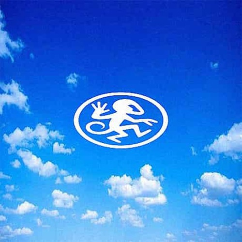
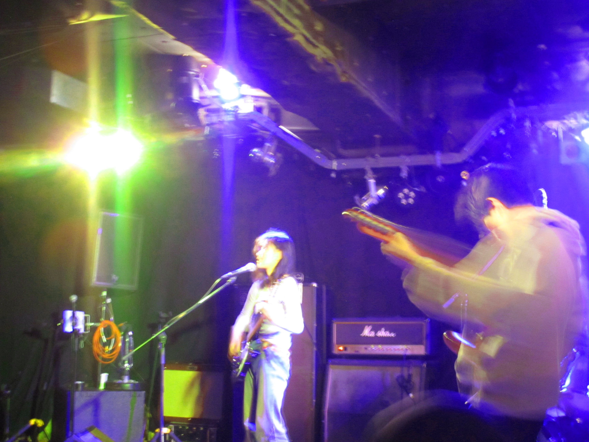

PROJECT RADIO is your uplink into the archives of the underground. A living database of articles that decode forgotten art movements, dissect lost games, and shine a light on subcultures both past and present. Each piece dives beneath the surface of culture—unearthing stories overlooked by the mainstream and amplifying voices buried in static.
LATEST

Miles DeVoe

The Voice of Buddha Jane
From secretly playing music in her bedroom to performing on Tokyo’s underground rocky stage, Saki Nishioka turns her fears into art.

STICKER SLAP DIY
In this workshop we will show you how to make your own DIY sticker slaps!

Virtual Idols
A new generation of celebrities is threatening to displace actors, actresses and pop stars in the minds of the young. Only this time, they are not real...